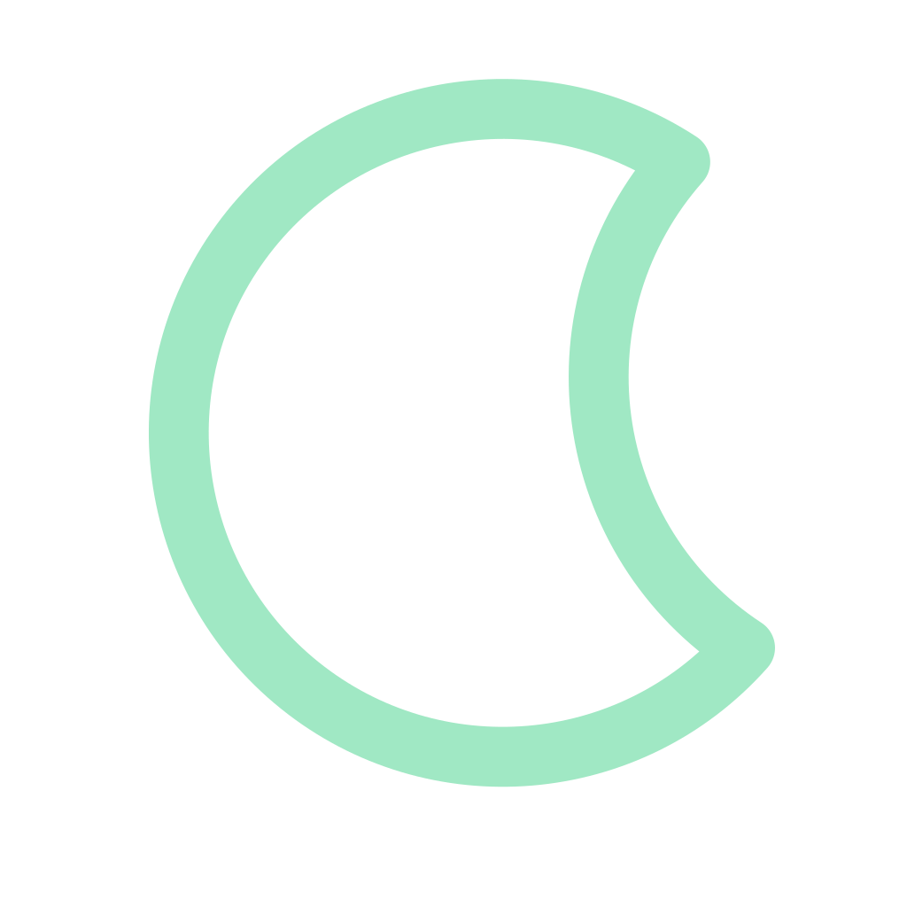
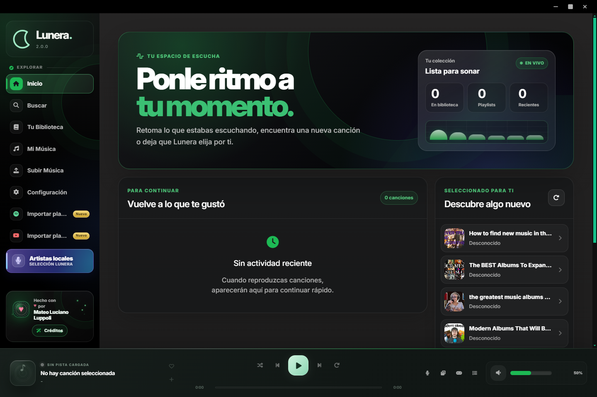
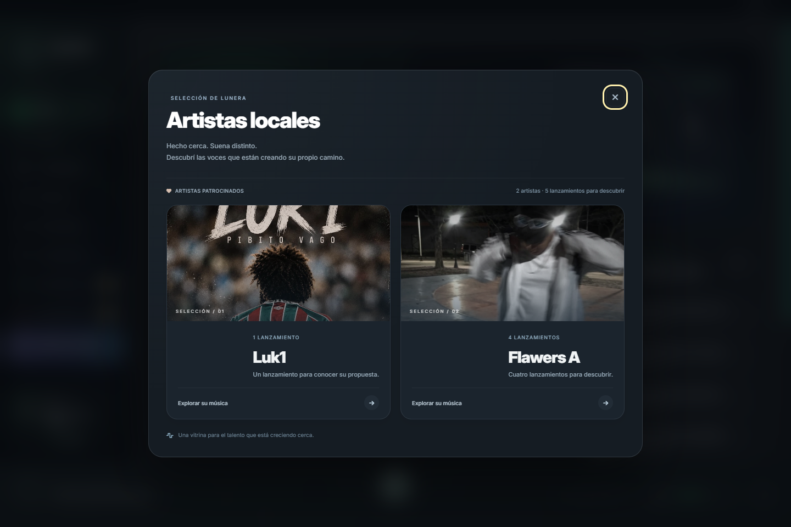
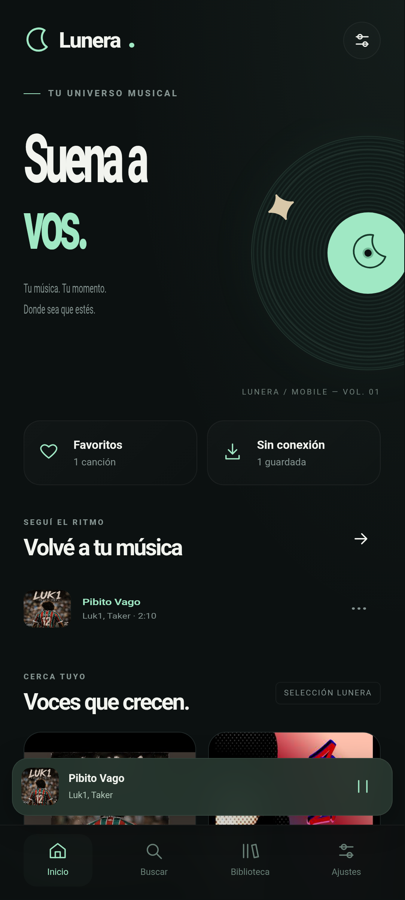
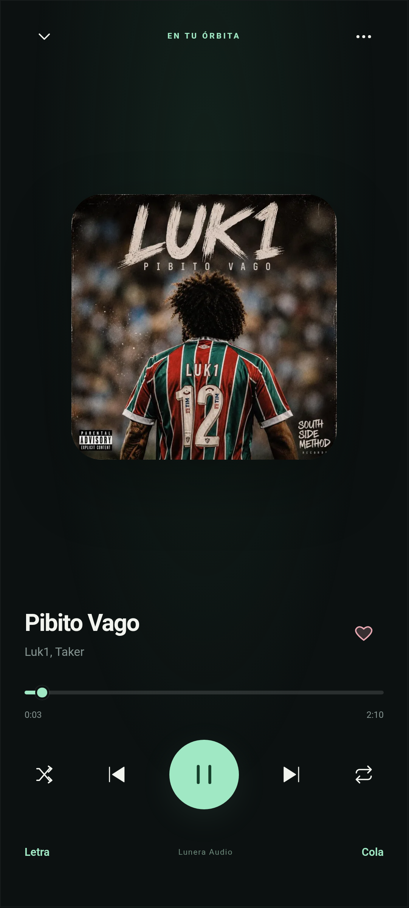

Hay canciones
que se quedan.
Favoritos, playlists y archivos locales. Organizá lo que escuchás y encontralo cuando lo necesitás.

Lunera. DescargarEsos temas que repetís.
Los que todavía no conocés.
Un lugar para todos.
Buscá, guardá y volvé a lo que te mueve. Sin perderte entre ventanas.




Capturas reales de Lunera para Windows y Android. Tocá una imagen para ampliarla.
Favoritos, playlists y archivos locales. Organizá lo que escuchás y encontralo cuando lo necesitás.
Temas, colores y visualizadores para que Lunera se sienta como parte de tu espacio.
Minirreproductor, cola de reproducción y controles a mano. Un buen soundtrack para lo que estés haciendo.
No es solo lo que escuchás.
Es cómo te hace sentir.
Podés usar Lunera en Windows 10 y 11 de 64 bits, o Lunera Mobile en Android 8.0 o posterior. Elegí tu plataforma en la sección de descargas.
Sí. Podés sumar música local a tu colección, organizarla en playlists y tener tus favoritos a mano.
En Windows, abrí el instalador .exe y seguí los pasos. En Android, descargá y abrí el APK en tu teléfono. Si Android lo solicita, permití la instalación desde el navegador o gestor de archivos que estés usando.
Sí. Desde Configuración podés elegir la interfaz, los colores y los efectos visuales. También podés reducir las animaciones.
En tu escritorio o en tu bolsillo.
Elegí dónde empieza tu próxima canción.
Un universo musical en tu PC. Tu colección, tus playlists y tu propio ambiente.
Descargar para Windows Windows 10 / 11 · 64 bits · 404 MBLlevá tu música con vos. La identidad de Lunera, pensada para tu teléfono.
Descargar para Android Android 8.0 o posterior · APK · 55 MB Abrí el APK en tu teléfono para instalarlo. Android puede pedirte permiso para instalar desde tu navegador.